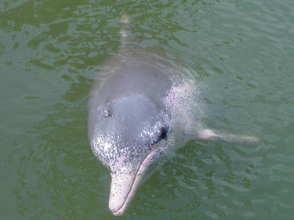

生物介紹：
印太洋駝海豚（學名：Sousa chinensis；英文：Indo-Pacific humpback dolphin），中文通稱為中華白海豚，又稱太平洋駝海豚、中華駝海豚、粉紅海豚等，臺灣俗稱為媽祖魚，是一種背鰭基部隆起的海豚科動物（有地域差異），膚色因地域、種群而異，多呈灰白相間的雜色，且帶有深色斑點。模式標本產自中國水域，中國的種群初生時全身呈深灰色，隨著年齡增長淡化為獨特的粉白色，頗具觀賞價值，有學者認為這是一種遇熱反應（如同人類在燥熱時會臉紅）。
分布：
廣泛分布於西太平洋和東印度洋的熱帶及溫帶沿岸海域，偶爾出現在淡水中，如長江、閩江、九龍江和珠江等。
原因：
中華白海豚面對填海和水質污染和大量捕捉造成生存範圍的縮窄問題，繁忙的海上交通亦造成船隻撞擊。此外，中華白海豚亦可能遭漁民誤捕。中華白海豚很少用作人工飼養，全球只有中國廣西的南寧動物園、泰國和新加坡的水族館飼養中華白海豚。中華白海豚被列入《瀕危野生動植物種國際貿易公約》附錄一，完全禁止有關的國際貿易，同時也被列為中國一級保護動物。